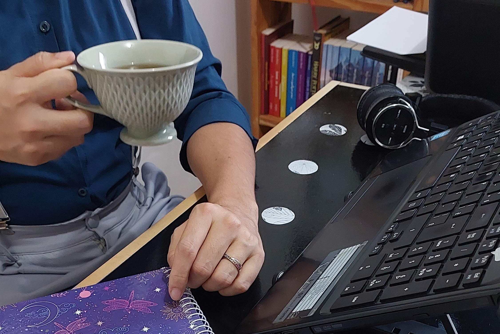
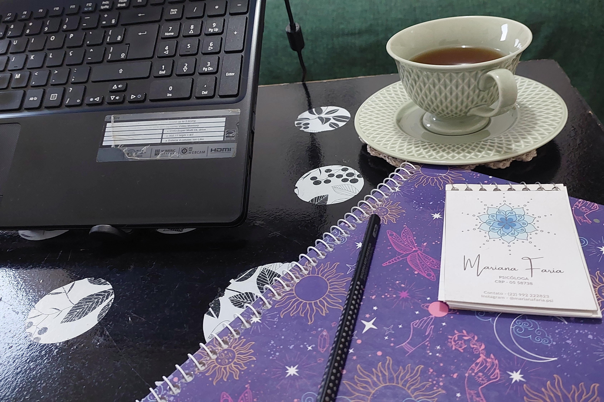

Terapia online
O objetivo da terapia não é a cura, mas o desejo de compreender suas emoções de forma mais profunda e construir uma nova relação com você mesmo e com o mundo. Através da abordagem junguiana, exploramos padrões, sentimentos e histórias que muitas vezes atuam no inconsciente, mas impactam diretamente a vida cotidiana.
Ofereço um espaço seguro, acolhedor e livre de julgamentos, onde você pode se reconhecer. A terapia é esse espaço seguro onde se aprende que ser vocẽ mesmo é suficiente.


Avaliação
A avaliação psicológica pré-cirúrgica é realizada antes de procedimentos como cirurgia bariátrica, vasectomia e laqueadura.
Seu objetivo é avaliar o estado emocional, o entendimento sobre a cirurgia e as expectativas em relação às mudanças que ela pode trazer, garantindo que a decisão seja consciente e responsável.